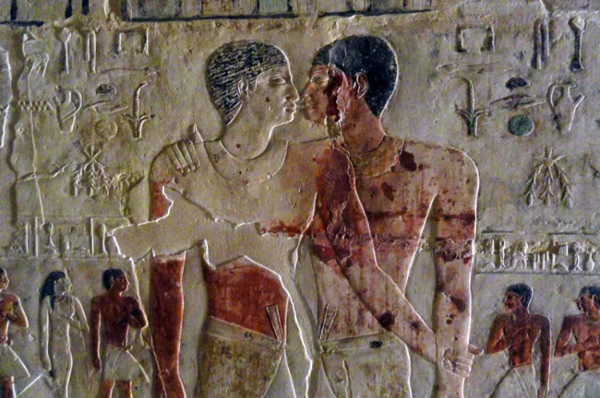

Transformo ideas complejas en experiencias visuales memorables. Fusiono el diseño conceptual con estéticas futuristas, modelado 3D interactivo e identidades de marca impactantes.
UBICACIÓN
Montevideo, UY
RANGO VECTORIAL
98.42% OK
Nacido en la era de la digitalización, soy Enzo Román. Desde Montevideo, Uruguay, me dedico a conceptualizar identidades y universos estéticos disruptivos. Mi enfoque no es simplemente crear "piezas de diseño", sino orquestar experiencias de comunicación completas que impacten sensorialmente.
Con más de 5 años experimentando con el arte 3D, branding corporativo, animación de alta fidelidad y tipografías experimentales, asumo cada proyecto con un rigor quirúrgico y una imaginación sin ataduras.
Mi misión es dotar a las marcas de una personalidad audaz, futurista y altamente competitiva en el ecosistema digital contemporáneo.
+5
Años de Experiencia
+40
Proyectos Completados
100%
Foco y Dedicación
Procesos optimizados combinados con técnicas experimentales para entregar resultados sobresalientes e interactivos.
Creación de sistemas visuales únicos: logotipos, paletas cromáticas, lineamientos de diseño y manuales de marca para un mundo moderno.
Renderizados tridimensionales realistas, diseño de empaques digitales, productos conceptuales y composiciones espaciales vanguardistas.
Animación comercial, videos promocionales, micro-interacciones de interfaz y edición de material dinámico con alto enganche visual.
Interfaces de usuario bellas y funcionales. Creación de layouts interactivos, prototipado dinámico enfocado en experiencia de usuario.
Explora una selección curada de trabajos que muestran mi versatilidad y pasión por empujar los límites visuales.

Buscando egipto.jpg...
Un estudio visual experimental que fusiona el misticismo del Antiguo Egipto con corrientes cyberpunk y arquitectura neo-ancestral. El concepto reimagina templos históricos y deidades tradicionales mediante modelados tridimensionales, tipografías vectoriales inspiradas en jeroglíficos y una paleta cromática dorada, cian y esmeralda.
Dirección creativa, diseño de identidad conceptual e ingeniería de motion graphics para el festival de música electrónica conceptualizada en Montevideo. Animaciones proyectadas en pantallas LED principales y assets interactivos para redes sociales.
Diseño editorial experimental enfocado en la moda cibernética y transhumanista. Maquetación transgresora con fuentes sans-serif brutales, posters integrados diseñados en 3D y una versión de landing page web interactiva con transiciones inmersivas.
Descubre los hitos académicos y profesionales que han moldeado mis capacidades de diseño estratégico.
Vortex Tech Studio (Montevideo)
Dirección de arte para el branding de startups globales, diseño de materiales corporativos interactivos en 3D y supervisión de campañas visuales para redes.
Aura Creative Agency
Encargado de renders de productos y material POP virtual. Diseño UI de plataformas web y maquetación de material de marketing digital avanzado.
Pixel Studio Uruguay
Retoque digital de fotografías de producto, desarrollo de piezas básicas de redes, layouts tipográficos y diseño de papelería corporativa clásica.
Universidad ORT (Uruguay)
Formación integral en teoría visual, tipografía editorial avanzada, branding estratégico, diseño web y semiótica visual de la imagen.
Crehana Plus (Online)
Certificación teórica y práctica en el modelado poligonal en Cinema 4D y motores de render optimizados (Redshift y Octane).